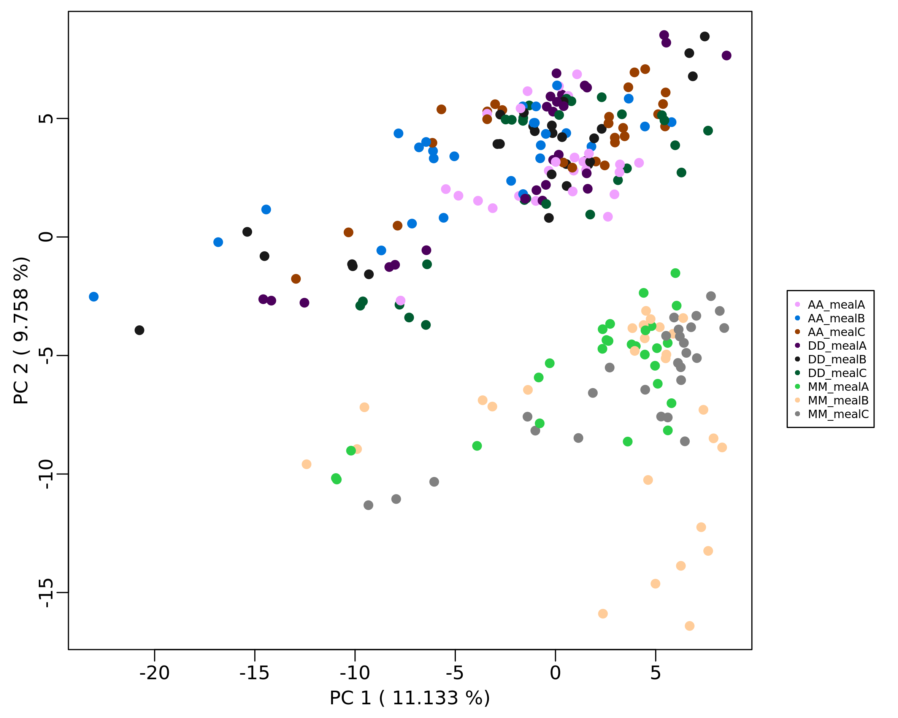

MargheRita: an R package for LC-MS/MS SWATH metabolomics data analysis and confident metabolite identification based on a spectral library of reference standards
margheRita.Rmd
Introduction
Untargeted metabolomics allows acquisition of thousands metabolite signals in a single sample that demands computational techniques for post-acquisition steps. Web-based data processing solutions as well as R packages exist and provide tools for metabolomics data analysis. Frequently these tools cover only a part of the entire workflow thus requiring the use of different platforms. Moreover, despite the existence of several databases, metabolite identification remains the bottleneck in metabolomics due to the high variability in the fragmentation pattern resulting from different mass spectrometer configuration-based libraries.
margheRita covers the whole data analysis workflow in LC-MS/MS untargeted metabolomics experiments, using MS and MS/MS (even SWATH) data. It takes in input the results of data extraction generated by MS-Dial (Tsugawa et al. 2015) and metadata for sample processing (in text or Excel format).
The package provides:
- a series of pre-processing functions (quality control, filtering and normalization) with a particular focus on methods specifically recommended for metabolomic profiles, such as filtering by mass defects, filtering by coefficient of variation (samples vs QCs) and probabilistic quotient normalization;
- metabolite annotation up to level-1, based on in-house spectral libraries as well as freely available libraries;
- spectral libraries that covers 4 different chromatographic column types: RP-C18, HILIC, RP-C8 and pZIC-HILIC Zwitterionic.
- simplified execution of parametric and non-parametric statistical tests over a large number of features;
- pathway analysis based on ORA and MSEA over various databases.
Source code: https://github.com/emosca-cnr/margheRita
Citation: Ettore Mosca, Marynka Ulaszewska, Zahrasadat Alavikakhki, Edoardo Niccolò Bellini, Valeria Mannella, Gianfranco Frigerio, Denise Drago, Annapaola Andolfo. MargheRita: an R package for LC-MS/MS SWATH metabolomics data analysis and confident metabolite identification based on a spectral library of reference standards. bioRxiv 2024.06.20.599545; doi: https://doi.org/10.1101/2024.06.20.599545
Contacts:
- Annapaola Andolfo, Proteomics and Metabolomics Facility, HSR
- Ettore Mosca, Bioinformatics Lab, CNR-ITB
Installation
The package requires a series of other R packages, which are available in CRAN, Bioconductor or github, namely:
## graphics, grDevices, stats, utils, clusterProfiler, pcaMethods, ComplexHeatmap, LSD, plotrix, pals, Hmisc, notame, Biobase, openxlsx, devtoolsIn most of the cases, the following instructions guarantee that all such dependencies are installed:
install.packages("devtools")
devtools::install_github("antonvsdata/notame")
if (!require("BiocManager", quietly = TRUE)){
install.packages("BiocManager")
}
BiocManager::install(c("clusterProfiler", "pcaMethods"))
devtools::install_github("emosca-cnr/margheRita", dependencies = T)Input data
margheRita is intended to be used after having done a number of data acquisition steps through MS-Dial (Tsugawa et al. 2015). It requires two text files in tab-delimited format:
- feature data file, which must include feature identifiers, m/z values, retention times, MS/MS spectra and feature abundances across samples; usually, this file is generated by MS-Dial;
- sample annotation file, which must include the following mandatory columns: “id”, “injection_order”, “batch”, “class”, “biological_rep” and “technical_rep”.
A couple of remarks:
short sample ids result yield better figures;
the collapse of technical replicates (see below) takes place over all samples that share the same concatenation of “class” and “biological_rep” values.
The function read_input_file() read the two files and
creates the “mRList” object, which is used by most of the margheRita
functions as main input/output:
mL <- read_input_file(feature_file = "MS-Dial_file.txt", sample_file = "sample_info.txt")Please, also consider that, to properly split QC samples, you must indicate exactly “QC” as class of a sample in the sample_file.
The initial mRList object contains the following elements:
| Element of mRList | Description |
|---|---|
| data | matrix containing metabolite abundances |
| metab_ann | metabolite annotation |
| sample_ann | sample annotation |
| QC | matrix containing metabolite abundances of QC samples |
| QC_ann | annotation of QC samples |
## DD_mealC_t7_1 MM_mealB_t0_1 AA_mealA_t0_1
## F506 108.1681 141.9220 314.8479
## F507 462.1838 466.3308 810.1950
## F511 52674.7600 79656.2100 24772.5900
## F513 2300.2920 9686.2540 696.9471
## F515 52686.7100 79673.6700 24777.8200
## F576 685.8444 2175.1690 2713.2550## Feature_ID MSDialName
## F506 F506 Unknown
## F507 F507 Unknown
## F511 F511 Trimethylamine N-oxide; CE30; UYPYRKYUKCHHIB-UHFFFAOYSA-N
## F513 F513 Unknown
## F515 F515 Trimethylamine??N-oxide
## F576 F576 Unknown
## MSDialSMILES rt mz
## F506 null 1.260 76.03783
## F507 null 0.868 76.03820
## F511 CN(=O)(C)C 0.888 76.07437
## F513 null 1.148 76.07460
## F515 O=N(C)(C)C 0.855 76.07492
## F576 null 4.846 81.06902## id injection_order batch class technical_rep
## DD_mealC_t7_1 DD_mealC_t7_1 14 1 DD 1
## MM_mealB_t0_1 MM_mealB_t0_1 15 1 MM 1
## AA_mealA_t0_1 AA_mealA_t0_1 16 1 AA 1
## AA_mealC_t1_1 AA_mealC_t1_1 17 1 AA 1
## DD_mealA_t6_1 DD_mealA_t6_1 18 1 DD 1
## MM_mealC_t8_1 MM_mealC_t8_1 19 1 MM 1
## biological_rep subj_meal_time meal time subj_meal
## DD_mealC_t7_1 mealC_t07 DD_mealC_t07 mealC t07 DD_mealC
## MM_mealB_t0_1 mealB_t00 MM_mealB_t00 mealB t00 MM_mealB
## AA_mealA_t0_1 mealA_t00 AA_mealA_t00 mealA t00 AA_mealA
## AA_mealC_t1_1 mealC_t01 AA_mealC_t01 mealC t01 AA_mealC
## DD_mealA_t6_1 mealA_t06 DD_mealA_t06 mealA t06 DD_mealA
## MM_mealC_t8_1 mealC_t08 MM_mealC_t08 mealC t08 MM_mealC## QC01 QC07 QC23
## F506 347.2336 162.1097 216.9347
## F507 857.4278 481.7928 968.1245
## F511 71377.8900 38373.6100 61439.0300
## F513 6684.7820 2336.0220 4889.8950
## F515 71396.5500 38378.4600 60577.0500
## F576 1095.8860 699.0059 994.5408## id injection_order batch class technical_rep biological_rep
## QC01 QC01 9 1 QC 1 QC
## QC07 QC07 25 1 QC 7 QC
## QC23 QC23 131 1 QC 23 QC
## QC26 QC26 144 1 QC 26 QC
## QC29 QC29 167 1 QC 29 QC
## QC30 QC30 168 1 QC 30 QC
## subj_meal_time meal time subj_meal
## QC01 QC_QC QC QC QC_QC
## QC07 QC_QC QC QC QC_QC
## QC23 QC_QC QC QC QC_QC
## QC26 QC_QC QC QC QC_QC
## QC29 QC_QC QC QC QC_QC
## QC30 QC_QC QC QC QC_QCThe full version of the “Urine” dataset, which was used for margheRita assessment and to generate this documentation, is available at https://doi.org/10.5281/zenodo.11243781, files “Urine_RP_NEG_norm.txt” and “Urine_RP_POS_norm.txt”. The corresponding sample information files can be accessed as follows:
sample_file_NEG <- system.file("extdata", "Urine_RP_NEG_norm_metadata.txt", package = "margheRita")
sample_file_POS <- system.file("extdata", "Urine_RP_POS_norm_metadata.txt", package = "margheRita")Inter-operability
To support interoperability with other packages with a focus on metabolomics, the margheRitaList can be reorganized as a “MetaboSet” object, used by package “notame” (Klåvus et al. 2020):
ms <- as.metaboset(mRList)## MetaboSet object with 303 features and 253 samples.
## 10 QC samples included
## 303 non-flagged features, 0 flagged features.
##
## class:
## DD: 81, MM: 81, AA: 81, QC: 10
##
## The object has the following parts (splits):
## FALSE: featuresor as “PomaSummarizedExperiment” object, used by package “POMA” (Castellano-Escuder et al. 2021):
se <- as.PomaSummarizedExperiment(mRList)## class: SummarizedExperiment
## dim: 303 253
## metadata(0):
## assays(1): ''
## rownames(303): F506 F513 ... F42170 F42216
## rowData names(0):
## colnames(253): DD_mealC_t7_1 MM_mealB_t0_1 ... QC45 QC55
## colData names(10): class biological_rep ... injection_order
## technical_repNote that “POMA” package is not listed among the “Import” packages
and is not automatically installed as a dependency. POMA must be
manually installed to use the function
as.PomaSummarizedExperiment().
Filtering, imputation and normalization
The function filtering() runs filters to exclude
features/sample with many missing values, features with wrong m/z values
and, lastly, performs imputation of missing values:
mL <- filtering(mL)
# Samples with >= 100 metabolites 243 / 243
# Features occurring in >= 3 samples 604 / 604
# Features with appropriate m/z values: 548
# Features without appropriate m/z values: 56
No NAs: imputation not performed.These three steps can be called independently through the function
filter_NA(), m_z_filtering() and
imputation(), respectively. In particular,
m_z_filtering() remove features with m/z that have decimal
value within [4, 8] (by default), while the imputation is performed
replacing NA values with a random number, calculated between 10%-25% of
the minimum value of the feature.


The function heatscatter_chromatography() creates a
graphic overview of the mz and rt values in the dataset:

margheRita provides three ways for normalizing metabolite profiles:
- “log”, the log2 of metabolite abundances;
- “reference”, every sample is divided by a reference value;
- “pqn”, probabilistic quotient normalization (Dieterle et al. 2006);
For “reference” and “pqn” methods, the column reference
must be present in mRList$metab_ann. If missing, the
function calc_reference() sets up such column using average
metabolite values and medians of QC samples. For example, here’s a call
to normalize_profiles() using pqn:
mL_norm <- normalize_profiles(mL, method = "pqn")
PQN normalization
No reference profile found, using calc_reference() function...
Using QC...The comparison of the coefficient of variation of a metabolite in relation to QC samples provides a means to exclude low quality features. In particular, only features that have a CV ratio between no-QC samples and QC sample higher than a given threshold (by default 1) are kept:
mL_norm <- CV_ratio(mRList = mL_norm)
Summary of CV ratio (samples / QC):
Min. 1st Qu. Median Mean 3rd Qu. Max.
0.3593 0.8025 1.1032 1.4645 1.6516 13.4896
# Metabolites with appropriate CV 303 / 539 The distributions of metabolite relative log-abundances can be calculated and visualized by means of:
mL <- RLA(mRList = mL)Typically, after normalization, the various samples should have
similar distributions of relative log-abundances. 
Principal Component Analysis
margheRita performs Principal Component Analysis (PCA) using the
function mR_pca(), which relies on the package pca_methods
(Stacklies et al. 2007). Besides choosing
the scaling method (argument scaling) and number of PCs
(nPcS), it allows to include/exclude quality control
samples by means of argument include_QC:
mL_norm <- mR_pca(mRList = mL_norm, nPcs=5, scaling="uv", include_QC=FALSE)The results are added to the mRList in the element pca.
It also provides some plots, like the visualization of distribution of
loadings for all-pairs of the top 5 PCs. The plots are directly saved in
the current working directory (or in the sub directory created with the
argument dirout). The results of PCA can be plotted using
Plot2DPCA() function. The argument col_by
enables the choice of the mRList$sample_ann column to be
used to color samples:
Plot2DPCA(mRList = mL_norm, pcx=1, pcy=2, col_by="class", include_QC=TRUE)
Removing samples
It is common that the inspection of the similarity between samples
(e.g. distribution over the top PCs, RLA) rise concerns about the
quality of some samples. The function remove_samples()
allows the user to remove one or more samples from the
mRList. Here, for example we remove all “Blank”
samples:
mL <- remove_samples(mRList = mL, ids = "Blank", column = "class")In this case, the function removes all samples with value “Blank” in the column “class” of sample annotation.
Collapsing techinical replicates
The definition of mean metabolite abundance for every biological
replicate is performed by means of collapse_tech_rep()
function:
mL_norm_bio <- collapse_tech_rep(mRList = mL_norm)## AA_mealA_t00 AA_mealA_t01 AA_mealA_t02 AA_mealA_t03 AA_mealA_t04
## F506 372.5212 314.9164 641.2731 328.3019 183.8177
## F513 686.5940 583.5344 575.2296 517.7881 438.2448
## F576 1859.9782 3005.7498 2431.0017 1601.8178 2010.3795
## F848 384.4542 407.5416 431.8409 297.6953 204.5562
## F958 806.3609 718.5354 677.2341 629.7116 648.8627
## F1016 3728.8124 3083.9761 4084.9936 2558.5845 2531.7107## class_biorep class biological_rep
## AA_mealA_t00 AA_mealA_t00 AA mealA_t00
## AA_mealA_t01 AA_mealA_t01 AA mealA_t01
## AA_mealA_t02 AA_mealA_t02 AA mealA_t02
## AA_mealA_t03 AA_mealA_t03 AA mealA_t03
## AA_mealA_t04 AA_mealA_t04 AA mealA_t04
## AA_mealA_t05 AA_mealA_t05 AA mealA_t05Statistical analysis
MargheRita provides some functions to calculate mean and variability, fold changes and to test for metabolite variations.
The function mean_median_stdev_samples() calculates
mean, median and standard deviation of metabolite abundance according to
the sample classes specified in the column “class” of sample
annotation:
mean_median_stdev_samples(mL_norm_bio)
According to dataset size, this might take a few minutes.
Calculating means...
Calculating medians...
Calculating standard deviations...The function univariate() performs dataset-wide
statistical tests (Student t-tests, Wilcoxon test, Anova and
Kruskal-Wallis test) between levels of a particular factor defined in
the sample annotation:
mL_norm_bio <- univariate(mL_norm_bio, test_method="anova", exp.levels = c("AA", "DD", "MM"), exp.factor = "class")## F p q DD-AA MM-AA
## F506 56.603887 6.500895e-16 9.379863e-15 0.000000e+00 0.000000e+00
## F513 11.464627 4.315428e-05 1.379828e-04 6.623790e-02 2.340794e-05
## F576 27.699625 8.141555e-10 6.167228e-09 8.774088e-06 6.781009e-10
## F848 1.299677 2.784574e-01 3.486471e-01 3.061504e-01 9.812010e-01
## F958 144.803482 5.517268e-27 2.786220e-25 0.000000e+00 3.929312e-01
## F1016 17.463922 5.400686e-07 2.517551e-06 3.059389e-02 4.030582e-03
## MM-DD
## F506 8.275582e-01
## F513 3.658063e-02
## F576 7.333725e-02
## F848 4.027080e-01
## F958 0.000000e+00
## F1016 2.703868e-07The full results of the analysis are saved to the text file
We found useful providing a function to retrieve the list of significant features:
significant_features <- select_sign_features(mL_norm_bio, test_method="anova", test_value = "q", cutoff_value = 0.05)## [1] "F3957" "F18426" "F19199" "F10248" "F9507" "F958"Metabolite identification
Metabolite identification in margheRita is performed by means of the
function metabolite_identification(), which requires an
mRList object and a reference library with MS and MS/MS metabolite
information. The identification is possible up to level-1, provided that
the required information are available in the reference library. The
identification is based on the quantification of the following
quantities:
- retention time (RT) error: \[\epsilon_t(i) = |t(i) - t^*(i)|\]
- ppm error: \[\epsilon_m(i) = \frac{|m(i) - m^*(i)|}{m^*(i)} \cdot 10^6\]
- percent relative intensity error: \[\epsilon_{I_R}(i,j) = \frac{|I_R(i,j) - I^*(i,j)|}{I^*_R(i,j)} \cdot 100\]
Such quantities are used to score the similarity among precursors of features and metabolites, as well as their MS/MS spectra.
The function select_library() provides a means to select
any of two sources:
margheRita, which contains MS and MS/MS information for about 800 metabolites spanning several biological functions; these libraries provideup to level 1 identifications in positive and negative modalities for “HILIC”, “LipC8”, “pZIC”, “RPLong” and “RPShort” chromatographic columns, that are acquired following the methods reported in the supplementary material of Mosca et al. (manuscript in preparation).
MS-Dial, which covers a much larger set of metabolites (\(10^5\)), but is limited to level 2 identifications in positive and negative modalities.
In this example, we load the margheRita library in positive modalitity with retention times of RPShort columns and we discard all peaks with relative intensity less than 10:
mR_library <- select_library(column = "RPShort", mode = "POS", accept_RI=10)The resulting mR_library is a list that contains
information about precursors
## ID CAS Name rt mz PubChemCID
## L10 L10 485-80-3 S-(5'-Adenosyl)-L-methionine 0.80 399.14452 34756
## L14 L14 61-19-8 Adenosine monophosphate 1.40 348.07037 6083
## L17 L17 979-92-0 S-Adenosylhomocysteine 1.28 385.12887 439155
## L20 L20 56-86-0 L-Glutamic acid 0.90 148.06044 33032
## L30 L30 56-40-6 Glycine 0.85 76.03931 750
## L33 L33 56-41-7 L-Alanine 0.88 90.05496 5950
## SMILES
## L10 C[S+](CC[C@H](N)C(O)=O)C[C@H]1O[C@H]([C@H](O)[C@@H]1O)N1C=NC2=C1N=CN=C2N
## L14 NC1=NC=NC2=C1N=CN2[C@@H]1O[C@H](COP(O)(O)=O)[C@@H](O)[C@H]1O
## L17 N[C@@H](CCSC[C@H]1O[C@H]([C@H](O)[C@@H]1O)N1C=NC2=C(N)N=CN=C12)C(O)=O
## L20 N[C@@H](CCC(O)=O)C(O)=O
## L30 NCC(O)=O
## L33 C[C@H](N)C(O)=Oand MS/MS peaks
## $M1
## [,1] [,2]
## [1,] 45.03236 10.34602
## [2,] 70.02762 12.46120
## [3,] 96.00721 13.50730
## [4,] 99.04249 17.68019
## [5,] 113.03337 100.00000
## [6,] 117.05313 20.43913
##
## $M2
## [,1] [,2]
## [1,] 57.03256 11.18379
## [2,] 60.07970 58.46973
## [3,] 85.02673 100.00000
## [4,] 95.08432 12.06547
## [5,] 109.09995 11.77031
## [6,] 144.10080 38.14543
## [7,] 183.17293 27.40629
## [8,] 285.20408 26.57983
## [9,] 344.27686 33.27335
##
## $M3
## [,1] [,2]
## [1,] 55.01692 100.00000
## [2,] 56.04866 58.49046
## [3,] 70.06436 54.29821
## [4,] 98.05859 90.19182
## [5,] 116.06901 16.49188Once the library is selected, metabolite identification can be
performed by the homonymous function, where the argument
features specifies the features to be considered (all
features if it is left features=NULL, as in the following
example):
mL_norm_bio <- metabolite_identification(mL_norm_bio, library_list = mR_library)The function metabolite_identification() has a series of
parameters that can be adjusted to optimize the identification process
(see its documentation). By default, all association that met the
considered criteria are returned. When metabolite identification is
applied on a large number of features (e.g., \(10^3\)), it’s common to obtain multiple
features associated with the same metabolite and the opposite (1
feature, multiple metabolites). This redundancy can be addressed setting
filter=TRUE. In this case, the various features associated
with the same metabolite are filtered considering the classification
(Level 1, Level 2, Level 3a and Level 3b), the errors (see above) and a
series of quantitative and qualitative scores (see below and our article
for further details). The resulting associations (including full details
of the analysis) are stored in
mL_norm_bio$metabolite_identification$associations:
## Feature_ID rt mz RT_err RT_class RT_flag ppm_error mass_flag
## 581 F14798 2.931 282.1190 0.069 super TRUE 2.3543199 TRUE
## 150 F2025 3.821 116.0686 2.851 unacceptable FALSE 17.1330884 TRUE
## 571 F6378 1.217 182.0811 0.413 super TRUE 0.4029412 TRUE
## 474 F5114 3.742 165.0533 0.658 acceptable TRUE 7.8412829 TRUE
## 144 F16399 5.698 299.1265 1.272 unacceptable FALSE 4.4438533 TRUE
## mass_status ID_peaks peaks_found_ppm_RI matched_peaks_ratio
## 581 super M228 1 1.0000000
## 150 suffer M535 1 1.0000000
## 571 super M1569 6 0.8571429
## 474 acceptable M54 3 0.7500000
## 144 super M1110 5 0.7142857
## precursor_in_MSMS ID Name rt_lib mz_lib
## 581 FALSE L801 1-Methyladenosine 3.00 282.1197
## 150 FALSE L138 L-Proline 0.97 116.0706
## 571 FALSE L77 L-Tyrosine 1.63 182.0812
## 474 FALSE L538 p-Coumaric acid 4.40 165.0546
## 144 FALSE L1352 Enterolactone 6.97 299.1278
## SMILES Level Level_note
## 581 CN1C=NC2=C(N=CN2[C@@H]2O[C@H](CO)[C@@H](O)[C@H]2O)C1=N 1
## 150 OC(=O)[C@@H]1CCCN1 2
## 571 N[C@@H](CC1=CC=C(O)C=C1)C(O)=O 1
## 474 OC(=O)\\C=C\\C1=CC=C(O)C=C1 1
## 144 C1C(C(C(=O)O1)CC2=CC(=CC=C2)O)CC3=CC(=CC=C3)O 2A summary of the associations is available in
mL_norm_bio$metabolite_identification$associations_summary:
## Feature_ID ID Name Level Level_note
## 581 F14798 L801 1-Methyladenosine 1
## 150 F2025 L138 L-Proline 2
## 571 F6378 L77 L-Tyrosine 1
## 474 F5114 L538 p-Coumaric acid 1
## 144 F16399 L1352 Enterolactone 2The associations are used to add metabolite information to
mL_norm_bio$metab_ann (here, we omit MS/MS spectra for the
sake of brevity):
## Feature_ID MSDialName
## 1 F506 Unknown
## 2 F513 Unknown
## 3 F848 Unknown
## 4 F1016 w/o MS2:3-Hydroxypyridine; CE0; GRFNBEZIAWKNCO-UHFFFAOYSA-N
## 5 F1279 w/o MS2:1-AMINOCYCLOPROPANE-1-CARBOXYLATE
## 6 F1428 w/o MS2:L-2,3-DIAMINOPROPIONIC ACID
## MSDialSMILES rt mz ID
## 1 null 1.260 76.03783 L30
## 2 null 1.148 76.07460 L631
## 3 null 1.630 90.05526 L199;L33;L92
## 4 c1cc(cnc1)O 1.324 96.04393 L804
## 5 NC1(CC1)C(O)=O 0.756 102.05508 L659
## 6 NCC(N)C(O)=O 6.306 105.06686 L936
## Name PubChemCID
## 1 Glycine 750
## 2 Trimethylamine N-oxide 1145
## 3 Beta-Alanine;L-Alanine;Sarcosine 1088;239;5950
## 4 2-Hydroxypyridine 8871
## 5 1-Aminocyclopropanecarboxylic acid 535
## 6 2,3-Diaminopropionic acid 97328Also, the function metabolite_identification() creates
the element mL_norm_bio$data_ann, where each “Feature_ID”
is mapped to a unique “Name”; indeed, potential n-to-1 associations
between “Feature_ID” and “Name” that still persist after filtering are
removed keeping the “Feature_ID” with the highest abundance across
samples. Here is how it looks like:
## Feature_ID Name
## (-)-Nicotine F5010 (-)-Nicotine
## (-)-Norepinephrine;Pyridoxine F5472 (-)-Norepinephrine;Pyridoxine
## (+/-)-Mevalonolactone F2891 (+/-)-Mevalonolactone
## AA_mealA_t00 AA_mealA_t01 AA_mealA_t02
## (-)-Nicotine 617.8286 719.7500 857.6484
## (-)-Norepinephrine;Pyridoxine 2084.8574 1745.2755 1657.5041
## (+/-)-Mevalonolactone 403.4225 272.1336 468.5903The full output of metabolite_identification() is saved
to the xlsx file “metabolite_identification.xlsx”.
The spectra from all the features that match a metabolite can be inspected creating the following plot through:
visualize_associated_spectra(mRList = mL_norm_bio, mR_library = mR_library, metabolite_id = "L1660")
The function h_map_MSMS_comparison() draws heatmaps to
visually compare ppm errors and RI differences between feature and
metabolite spectra:
h_map_MSMS_comparison(mL_norm_bio, metab_id = "L1660", feature_id = "F10165")

Retriving data and statistics for identified metabolites
Metabolite abundances, metabolite identification and statistical
analysis results can be merged using the function
annotate_univariate_results(). The argument
feature_stats should be the name of any statistical test
saved in the mRList or a custom data frame with Feature_ID
as row names:
metab_stat <- annotate_univariate_results(mRList = mL_norm_bio, feature_stats = "anova")The resulting data.frame is saved to file “data_stats_ann.csv”.
Metabolite abundance visualization
The function metab_boxplot() draws boxplots of feature
abundances grouped by the levels of a given factor:
metab_boxplot(mRList = mL_norm_bio, col_by="class", group="class", features = "F3957")
The function h_map() provides heatmaps based on package
ComplexHeatmap (Gu, Eils, and Schlesner 2016). Here we
shoew the abundance of the most significant metabolites according to
anova test:
significant_features <- select_sign_features(mL_norm_bio, test_method="anova", test_value = "q", cutoff_value = 10e-10, feature_id = "Name")
h_map(mL_norm_bio, scale_features=TRUE, features = significant_features, show_column_names=F, data.use = "data_ann")Note that we extracted metabolite “Name” as feature_id and used
“data_ann” 
Pathway analysis
margheRita implements both Over Representation Analysis (ORA) and
Metabolite Set Enrichment Analysis (MSEA), based on clusterProfiler
(Wu et
al. 2021) over BioCyc, KEGG and Reactome pathway databases.
These analyses can be run by means of function
pathway_analysis(). In case of ORA the minimum requirements
are the vector of PubChemCID to be tested and the reference universe of
all PubChemCIDs in the dataset. In the following example we extract the
PubChemCID of the most significat features according to anova and
consider all the PubChemCID found in the dataset as reference
universe:
significant_features <- select_sign_features(mRList = mL_norm_bio, test_method="anova", test_value = "q", cutoff_value = 10e-10, feature_id = "PubChemCID")
all_PubChemCID <- unique(mL_norm_bio$metab_ann$PubChemCID[!is.na(mL_norm_bio$metab_ann$PubChemCID)])
pa_res <- pathway_analysis(in_list = significant_features, type = "ora", universe = all_PubChemCID)In case of MSEA, a named ranked vector of scores for all PubChemCIDs in the dataset, in decreasing order of importance:
ranked_vector <- select_sign_features(mRList = mL_norm_bio, test_method="anova", test_value = "q", cutoff_value = Inf, feature_id = "PubChemCID", values = TRUE)
ranked_vector <- sort(-log10(ranked_vector), decreasing = T)
msea_res <- pathway_analysis(in_list = ranked_vector, type = "msea")The result is a list that contains:
- a table with pathway descriptions;
- an object of class “enrichResult”, which can be used to obtain various visualizations through clusterProfiler functions.
Here’s an example of resulting tables for ORA:
## ID Description GeneRatio BgRatio
## 83035 83035 ABC transporters 6/16 11/88
## 1270158 1270158 Metabolism of amino acids and derivatives 7/16 19/88
## 790012 790012 Biosynthesis of amino acids 5/16 11/88
## 1270189 1270189 Biological oxidations 4/16 11/88
## 1269956 1269956 Metabolism 11/16 47/88
## pvalue p.adjust qvalue
## 83035 0.003893364 0.05061373 0.04098278
## 1270158 0.024860995 0.10926921 0.08847709
## 790012 0.025215971 0.10926921 0.08847709
## 1270189 0.108983357 0.35419591 0.28679831
## 1269956 0.139224418 0.36198349 0.29310404
## geneID Count
## 83035 750/6287/247/1123/6262/5962 6
## 1270158 247/1123/439227/586/6262/439258/60961 7
## 790012 750/6287/6262/5962/439258 5
## 1270189 2519/79034/60961/5753 4
## 1269956 247/1123/439227/586/6262/439216/2519/79034/439258/60961/5753 11and MSEA:
## ID Description setSize
## 1270158 1270158 Metabolism of amino acids and derivatives 22
## 790012 790012 Biosynthesis of amino acids 13
## 83035 83035 ABC transporters 12
## 132956 132956 Metabolic pathways 73
## 172847 172847 Protein digestion and absorption 11
## enrichmentScore NES pvalue p.adjust qvalues rank
## 1270158 0.7412484 1.473106 0.000999001 0.007568113 0.004779861 36
## 790012 0.8204099 1.571580 0.001009082 0.007568113 0.004779861 22
## 83035 0.7754533 1.471869 0.011122346 0.055611729 0.035123197 22
## 132956 0.6058509 1.276509 0.015984016 0.057750760 0.036474164 43
## 172847 0.7679051 1.443829 0.019250253 0.057750760 0.036474164 20
## leading_edge
## 1270158 tags=45%, list=20%, signal=42%
## 790012 tags=46%, list=12%, signal=44%
## 83035 tags=50%, list=12%, signal=47%
## 132956 tags=33%, list=23%, signal=42%
## 172847 tags=36%, list=11%, signal=34%
## core_enrichment
## 1270158 439258/439227/247/586/1123/6262/60961/86/5816/936
## 790012 5962/439258/6287/750/6267/6262
## 83035 5962/247/6287/1123/750/6262
## 132956 5962/439258/439227/247/6287/586/1123/750/6844/111/6267/6262/5753/60961/439216/2519/444539/86/5816/936/6037/4687/126/33032
## 172847 5962/6287/750/6267
See the documentation of clusterProfiler for further information.